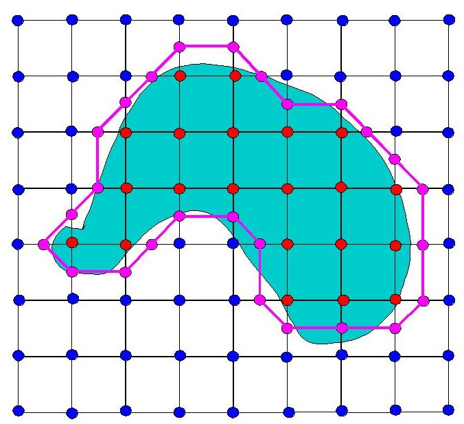
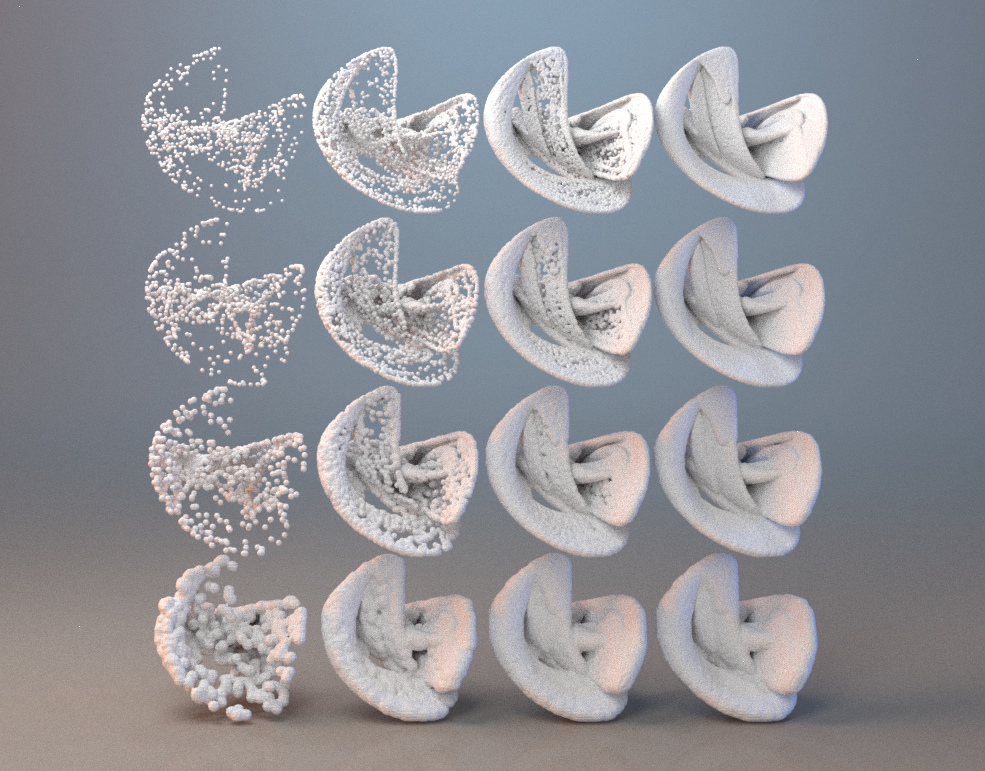

Generalizing to 3D, and converting point cloud to mesh
The previous project involved iteration using two bivariate polynomials. To generalize this to 3D, I starting using three trivariate polynomials now instead. A single trivariate degree two polynomial has the form
\[f(x,y,z) = c_1 + c_2 x + c_3 y + c_4 z + c_5 x^2 + c_6 xy + c_7 xz + c_8 y^2 + c_9 yz + c_{10} z^2 \]
Three of these trivariate degree two polynomials now contain 30 degrees of freedom, equivalently a 30-dimensional search space for interesting equations.
Significant increase in computation times occurs as well now, and no clear way to represent these objects. After a couple million iterations on 3D points, we now have a massive set of 3D points. Unlike 2D images
where you simply light up the pixel where the the points are most concentrated, 3D doesn't have nice analogues. Voxels are computationally expensive and look bad.
Addditionally, the dimension of the histogram greatly affects it's computation speed.
I decided to bite the bullet and accept the large computational times associated with 3D histograms, but once I had this histogram, I decided it would be better to render a mesh rather than voxels.
To get a mesh from this histogram, I implemented the classic marching-cubes algorithm.

Credit to Professor Ben Anderson's website for this picture
Marching cubes is an algorithm that takes a density function as an input, and outputs a
manifold(no holes or nasty self intersections) mesh as an output. See right for intuition on the 2D equivalent of marching-cubes: Given a density function that represents that blue region, the pink mesh is generated.
A 3D histogram is essentially the same thing as a density function over 3D space: you plug in 3 numbers and a single number falls out.
Once I got the mesh, I applied some Blender knowledge to further clean and smooth the mesh. Both the size of the 3D histogram and total amount of iterations affect the final output.
The next picture is the same 30-coefficient iterated function. The 3D histogram resolution varies vertically while the total iteration amount varies horizontally.

To get a good model(top right item), it's clear both resolution and iterations need to be very large.